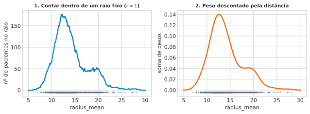
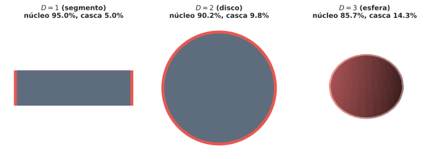
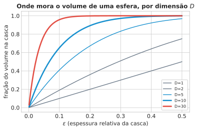
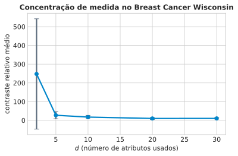
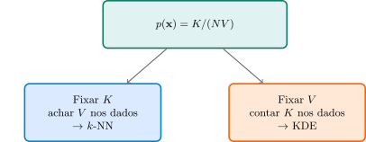
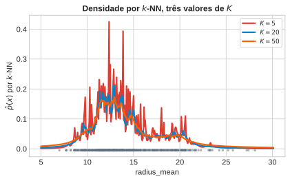
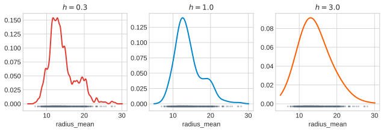
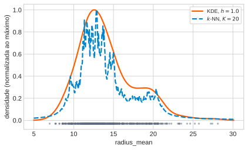
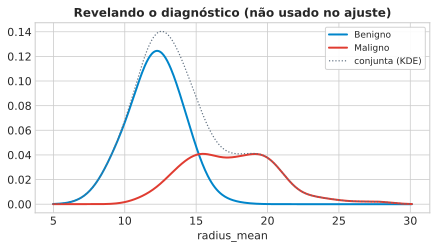

Aprendizado Não Supervisionado
2026-08-27
Problema sem rótulo: dado \(\mathbf{x}_1,\dots,\mathbf{x}_N\), descrever o comportamento típico de uma população para reconhecer o que se desvia dele (profiling).
Aposta: assumir uma família teórica — Gaussiana multivariada \(\mathcal{N}(\boldsymbol\mu,\Sigma)\) — e ajustá-la por máxima verossimilhança: \[\hat{\boldsymbol\mu}=\tfrac1N\sum_n\mathbf{x}_n, \qquad \hat\Sigma=\tfrac1N\sum_n(\mathbf{x}_n-\hat{\boldsymbol\mu})(\mathbf{x}_n-\hat{\boldsymbol\mu})^T\]
Decisão: distância de Mahalanobis, \(D_M(\mathbf{x})^2=(\mathbf{x}-\hat{\boldsymbol\mu})^T\hat\Sigma^{-1}(\mathbf{x}-\hat{\boldsymbol\mu})\) — \(\hat\Sigma^{-1}\) estica nas direções de baixa variância, comprime nas de alta variância; não é a Euclidiana ingênua.
\(D_M(\mathbf{x})^2\sim\chi^2_d\) vira \(p\)-valor. Rota conjunta (\(d(d+1)/2\) parâmetros, sensível a correlação) vs. por dimensão (supor independência, \(d\) parâmetros, combinados via Fisher) — a mesma tensão do Naive Bayes, agora em teste de hipótese.
Duas rachaduras já anunciadas: dados multimodais (uma Gaussiana só borra subpopulações distintas); outliers no ajuste (inflam \(\hat\Sigma\), escondem o que se queria detectar).
Uma terceira, mais estrutural — abre esta aula: \(\hat\Sigma\) só é invertível se \(N>d\). Sem isso, sem Mahalanobis, a receita trava antes de começar. E mesmo com \(N>d\), o ajuste piora conforme \(d\) cresce — o porquê ainda não foi explicado, só anunciado.
Hoje: duas perguntas.
1. Por que “alta dimensão” quebra a intuição geométrica — não só uma questão de contar os \(d(d+1)/2\) parâmetros de \(\Sigma\)?
2. Sem assumir nenhuma forma para \(p(\mathbf{x})\) — nem Gaussiana, nem nenhuma outra família —, como estimar densidade deixando os dados “falarem por si”?
Se \(\hat\Sigma\) já quebra quando \(N<d\), o que exatamente quebra primeiro quando \(d\) cresce muito além disso, mesmo com \(N\) ainda maior que \(d\)?
Dica: pense no que significa “estimar uma direção de covariância” com poucos pontos por direção disponível.
Resposta — o que quebra quando \(d\) cresce
Voltando à pergunta: o que quebra primeiro quando \(d\) cresce muito além de \(N>d\)? A resposta completa vem no Bloco 2 — é geométrico, não só uma questão de quantos parâmetros cabem em quantos dados.
radius_mean: o raio médio do tumor medido no exame — um único número por paciente, dos 569 do Breast Cancer Wisconsin.
Desafio de hoje: para cada valor de \(x\) no eixo, esse valor é comum entre os pacientes, ou raro? Ainda sem fórmula — duas heurísticas, quase algorítmicas.
Escolha um raio \(r\) (ex.: \(r=1\)). Para cada \(x\) testado, marque a janela \([x-r,\,x+r]\) e conte quantos dos 569 pacientes caem dentro. Deslize \(x\) pelo eixo, repetindo a contagem.
Contagem alta = comum. Contagem baixa (ou zero) = raro.
Aspereza: paciente a \(0{,}99\) de \(x\) conta como “dentro” (peso \(1\)); a \(1{,}01\), “fora” (peso \(0\)) — corte abrupto para uma diferença mínima.
Suavize o corte: cada paciente contribui com um peso que desconta continuamente com a distância até \(x\) — alto perto, caindo aos poucos até quase zero, sem degrau.
Some os pesos dos 569 pacientes em cada \(x\): muita gente parecida por perto acumula peso; pouca gente, quase nada sobra. Mesma pergunta da Heurística 1, sem o corte brusco do raio rígido.

O que já dá para ver: as duas curvas concordam — pico alto perto de 12 (comum), cauda longa depois de 20 (raro). Os traços cinzas são os 569 pacientes reais, e as curvas sobem exatamente onde eles se concentram.
Heurística 1 (raio fixo, contagem dura) = janela de Parzen (KDE). Heurística 2 (peso suave) = KDE com kernel gaussiano — resolve a aspereza da Heurística 1.
Fixar a contagem em vez do raio (deixando o raio variar) dá o \(k\)-NN — a rota gêmea. Falta entender por que “andar para os dois lados” fica estranho com 30 atributos em vez de 1 (próximo bloco).
As duas curvas do gráfico anterior quase se sobrepõem — mas vêm de contas bem diferentes. Por que elas concordam tanto?
Dica: pense no que cada uma está, no fundo, tentando responder — não em como cada conta é feita por dentro.
radius_mean.radius_mean, as duas curvas ainda seriam bem diferentes uma da outra nesse ponto.Resposta — por que as curvas concordam
radius_mean, não da ordem de listagem.Voltando à pergunta: concordam porque são duas contas diferentes para a mesma pergunta. Os Blocos 3–6 mostram que vêm, de fato, da mesma identidade matemática.
“if we divide a region of a space into regular cells […] the number of such cells grows exponentially with the dimensionality” — PRML, p. 121
“in spaces of high dimensionality, most of the volume of a sphere is concentrated in a thin shell near the surface” — PRML, p. 37
D= 1: fração do volume na casca de espessura ε=0.05 ≈ 0.050
D= 2: fração do volume na casca de espessura ε=0.05 ≈ 0.098
D= 5: fração do volume na casca de espessura ε=0.05 ≈ 0.226
D= 10: fração do volume na casca de espessura ε=0.05 ≈ 0.401
D= 30: fração do volume na casca de espessura ε=0.05 ≈ 0.785
D=100: fração do volume na casca de espessura ε=0.05 ≈ 0.994Mesmo raio, três dimensões — as únicas em que dá para desenhar a bola sem nenhum truque: \(D=1\) (segmento), \(D=2\) (disco), \(D=3\) (esfera).
Núcleo = raio geométrico real \(1-\epsilon\) em cada dimensão — sem analogia. \(D=1\): comprimento \(\propto r\). \(D=2\): área \(\propto r^2\). \(D=3\): volume \(\propto r^3\).
A casca já cresce visivelmente de \(D=1\) para \(D=3\) — o efeito fica dramático de verdade em \(D=10,30,100\), no cálculo numérico a seguir (nenhum desenho literal é mais possível ali).

“for large D the probability mass of the Gaussian is concentrated in a thin shell” — PRML, p. 37

Quero capturar uma fração \(r\) dos dados usando uma caixa (hipercubo) centrada num ponto. De que tamanho precisa ser essa caixa, em cada uma das \(p\) dimensões?
\(e_p(r)\) = aresta da caixa, como fração da amplitude da variável (\(e_p(r)=1\) = cobre a variável inteira).
Caixa de aresta \(e\) em \(p\) dimensões captura fração \(e^p\) do volume (mesma identidade \(r^D\) do Bloco 2). Resolvendo \(e^p=r\): \[e_p(r) = r^{1/p}\]
“para capturar 1% ou 10% dos dados […] precisamos cobrir 63% ou 80% da amplitude de cada variável […] Essas vizinhanças deixaram de ser ‘locais’.” — ESL, p. 22 (tradução nossa)
p= 1: para capturar 10% dos dados, cobrir 10.00% da amplitude de cada eixo
p= 2: para capturar 10% dos dados, cobrir 31.62% da amplitude de cada eixo
p= 10: para capturar 10% dos dados, cobrir 79.43% da amplitude de cada eixo
p= 30: para capturar 10% dos dados, cobrir 92.61% da amplitude de cada eixoEm \(p=1\) ou \(p=2\), cobrir 10% dos dados exige uma fatia pequena do eixo — ainda “local” de verdade.
Em \(p=30\): é preciso cobrir 93% da amplitude de cada variável só para capturar 10% dos dados — a caixa quase engole a variável inteira. A vizinhança deixou de ser local há muito tempo.
“The median distance from the origin to the closest data point […] For N = 500, p = 10, \(d(p,N)\approx 0.52\), more than halfway to the boundary.” — ESL, pp. 22–23
Importante
Com \(N=500\), \(D=10\): o vizinho mais próximo da origem está, em mediana, mais perto da fronteira do espaço do que de qualquer outro ponto.
Os dois resultados anteriores — volume na casca, vizinho perto da borda — apontam para o mesmo problema prático: em alta dimensão, todo mundo fica a distâncias parecidas de todo mundo.
Como medir isso diretamente? Contraste relativo: fixe um ponto de consulta, calcule a distância a todos os outros pontos, compare a mínima com a máxima.
\[\text{contraste} = \frac{\text{dist}_{\max}-\text{dist}_{\min}}{\text{dist}_{\min}}\]
d= 2 contraste relativo médio = 247.61 (desvio 294.79)
d= 5 contraste relativo médio = 27.07 (desvio 19.12)
d=10 contraste relativo médio = 17.26 (desvio 9.45)
d=20 contraste relativo médio = 9.96 (desvio 5.33)
d=30 contraste relativo médio = 10.19 (desvio 3.69)
De \(\approx 220\) (2 atributos) para \(\approx 10\) (30 atributos) — no próprio Breast Cancer Wisconsin, não num dado simulado. A maldição da dimensionalidade não é só teoria de livro: aparece exatamente nestes 30 atributos de exame clínico.
Se distâncias deixam de discriminar em alta dimensão, o que isso quebra primeiro: um classificador ou um estimador de densidade?
Dica: pense em cada item separadamente — nem todos têm a mesma resposta.
Resposta — distâncias que deixam de discriminar
Voltando à pergunta: quebra os dois — mas de formas diferentes, que os Blocos 3–5 vão precisar resolver de jeitos distintos (\(k\)-NN e KDE).
1. Ponto de consulta e vizinhança. Fixamos \(\mathbf{x}\) e uma região pequena \(R\) ao redor, de volume \(V\) — olhamos para dentro dela para decidir se \(\mathbf{x}\) está numa parte densa ou rala do espaço.
2. Densidade quase constante em \(R\). \(R\) pequena o bastante para tratar \(p(\mathbf{x})\) como um valor único ali dentro, não uma função que varia. Permite trocar uma integral por uma multiplicação (Passo 2).
3. Amostragem independente. Os \(N\) pontos vêm, cada um por conta própria, da mesma \(p(\mathbf{x})\) — é isso que permite tratar “quantos caem em \(R\)” como uma contagem binomial (Passo 3).
1. \(P=\int_R p(\mathbf{x})\,d\mathbf{x}\) (massa de probabilidade em \(R\)).
2. Assumimos que \(p(\mathbf{x})\) é aproximadamente constante em \(R\) \(\Rightarrow\) \(P\simeq p(\mathbf{x})V\).
3. Cada um dos \(N\) pontos, independente, tem probabilidade \(P\) de cair em \(R\) — como uma moeda viciada. Contar quantos “dão cara” em \(N\) lançamentos independentes é, por definição, \(K\sim\mathrm{Bin}(N,P)\).
4. \(\mathrm{Bin}(N,P)\) tem média \(NP\) e desvio \(\sqrt{NP(1-P)}\) — o desvio relativo encolhe como \(1/\sqrt{N}\). Para \(N\) grande, \(K\) se concentra perto de \(NP\) (mesma lógica de “1 milhão de moedas dá ~50% caras”): \(K\simeq NP\).
5. Combinando 2 e 4: \[p(\mathbf{x}) = \frac{K}{NV}\]
Nota
Premissa 2 pede \(V\) pequeno (densidade quase constante). Passo 4 pede \(V\) grande o bastante para \(K\) não ser ruidoso. As duas puxam \(V\) em direções opostas.

\(k\)-NN e KDE não são duas técnicas parecidas — são a mesma identidade \(p(\mathbf{x})=K/(NV)\), explorada de dois lados opostos do mesmo trade-off em \(V\).
A fórmula \(p(\mathbf{x})=K/(NV)\) tem uma tensão interna: \(V\) precisa ser pequeno e grande ao mesmo tempo. Isso é uma contradição real, ou só parece uma?
Dica: pense em “pequeno o bastante para quê” e “grande o bastante para quê”, separadamente.
Resposta — a tensão interna de \(K/(NV)\)
Voltando à pergunta: não é uma contradição — é um trade-off. \(k\)-NN e KDE resolvem esse trade-off de formas opostas, como veremos agora.
Nota
“we consider a fixed value of K […] we allow the radius of the sphere to grow until it contains precisely K data points. […] This technique is known as K nearest neighbours.” — PRML, pp. 124–125
1. \(d_K(\mathbf{x})\) = raio da esfera = distância ao \(K\)-ésimo vizinho.
2. Volume \(\propto r^D\) em \(D\) dimensões \(\Rightarrow\) \(V\propto d_K(\mathbf{x})^D\).
3. Substituindo em \(p(\mathbf{x})=K/(NV)\): \[p(\mathbf{x}) \propto \frac{1}{d_K(\mathbf{x})^D}\]
Nota
Aplicando isso a radius_mean do Breast Cancer Wisconsin, em três pontos-teste e três valores de \(K\):
K= 5 x0= 12.0 densidade estimada ≈ 0.1098
K= 5 x0= 17.5 densidade estimada ≈ 0.0549
K= 5 x0= 25.0 densidade estimada ≈ 0.0029
K= 20 x0= 12.0 densidade estimada ≈ 0.1598
K= 20 x0= 17.5 densidade estimada ≈ 0.0399
K= 20 x0= 25.0 densidade estimada ≈ 0.0046
K= 50 x0= 12.0 densidade estimada ≈ 0.1515
K= 50 x0= 17.5 densidade estimada ≈ 0.0382
K= 50 x0= 25.0 densidade estimada ≈ 0.0083

Os traços cinzas no eixo x (o rug plot, um traço por paciente) mostram duas concentrações visíveis de pontos — já sugerindo que radius_mean não é unimodal. Voltamos a isso no Bloco 6.
Aviso: Isto Não é Uma Densidade de Verdade
“the model produced by K nearest neighbours is not a true density model because the integral over all space diverges.” — PRML, p. 125
Se \(K\) é fixo e \(d_K(\mathbf{x})\) é o raio que cresce até capturar \(K\) pontos, o que acontece exatamente quando \(K=N\) (todos os pontos)?
Dica: pense no que acontece com \(d_K\) quando a esfera precisa englobar o conjunto de dados inteiro.
Resposta — o limite \(K=N\)
Voltando à pergunta: \(K=N\) é o extremo de “borrar tudo” — o análogo, no \(k\)-NN, do \(h\to\infty\) que veremos daqui a pouco no KDE.
Nota
1. \(k(u)=1\) se \(|u_i|\le 1/2\) — janela dura do hipercubo.
2. \(K=\sum_n k\left(\frac{\mathbf{x}-\mathbf{x}_n}{h}\right)\).
3. Substituindo em \(p(\mathbf{x})=K/(NV)\), com \(V=h^D\): \[p(\mathbf{x})=\frac{1}{N}\sum_n \frac{1}{h^D}k\left(\frac{\mathbf{x}-\mathbf{x}_n}{h}\right)\]
Aviso
Problema: descontinuidades artificiais nas bordas do cubo — o mesmo problema do histograma.
4. Trocando \(k(\cdot)\) por uma gaussiana no Passo 1, o mesmo Passo 3 leva a: \[p(\mathbf{x}) = \frac{1}{N}\sum_{n=1}^N \frac{1}{(2\pi h^2)^{1/2}} \exp\left(-\frac{\|\mathbf{x}-\mathbf{x}_n\|^2}{2h^2}\right)\]
Uma gaussiana de largura \(h\) sobre cada ponto — somadas, normalizadas. \(h\) é o parâmetro de suavização, o mesmo papel que \(K\) tinha na rota anterior.
“the parameter h plays the role of a smoothing parameter, and there is a trade-off between sensitivity to noise at small h and over-smoothing at large h.” — PRML, p. 124
Verificando isso em radius_mean, contando picos (máximos locais) da densidade estimada para três larguras de banda:
h=0.3: 12 picos detectados, densidade máxima 0.1541
h=1.0: 3 picos detectados, densidade máxima 0.1403
h=3.0: 1 picos detectados, densidade máxima 0.0913
\(h\) Pequeno, \(h\) Grande, \(h\) Certo: \(h=0.3\): 12 picos (ruído). \(h=3.0\): 1 pico (borra tudo). \(h=1.0\): 3 picos — melhor candidato.
O Mesmo Parâmetro, Três Disfarces
| Histograma | \(k\)-NN | KDE |
|---|---|---|
| \(\Delta\) | \(K\) | \(h\) |
Sempre o mesmo trade-off: pequeno demais é ruído, grande demais borra estrutura.
Se \(h\to\infty\) no KDE gaussiano, o que exatamente acontece com a forma da densidade estimada?
Dica: pense no que acontece com cada gaussiana individual quando sua largura cresce sem limite.
Resposta — o limite \(h\to\infty\)
Voltando à pergunta: \(h\to\infty\) degenera exatamente como \(K=N\) no \(k\)-NN — dois caminhos, mesma degenerescência final.

x0= 12.0 K= 5 d_K=0.040
x0= 12.0 K= 20 d_K=0.110
x0= 12.0 K= 50 d_K=0.290
x0= 25.0 K= 5 d_K=1.490
x0= 25.0 K= 20 d_K=3.840
x0= 25.0 K= 50 d_K=5.270Em \(x_0=12\) (região densa): \(d_K\) cresce pouco de \(K=5\) para \(K=50\) — a janela quase não precisa se abrir.
Em \(x_0=25\) (cauda, poucos pontos): \(d_K\) cresce muito mais rápido. O KDE, com \(h\) fixo, não tem esse ajuste — a mesma janela em toda parte.
Encontramos 3 Picos com \(h=1.0\): O que são esses picos, de fato?

O rótulo de diagnóstico — nunca usado em nenhum dos ajustes anteriores — explica a estrutura de 3 picos: os tumores benignos têm radius_mean médio \(\approx 12{,}1\), os malignos \(\approx
17{,}5\).
O KDE e o \(k\)-NN, sem ver rótulo nenhum, já haviam capturado essa mistura de duas subpopulações na forma da densidade estimada.
“both the K-nearest-neighbour method, and the kernel density estimator, require the entire training data set to be stored” — PRML, p. 127
Importante
ESL: densidade amostral \(\propto N^{1/p}\) — \(100\) pontos em 1D exigiriam \(100^{10}\) em 10D, para a mesma cobertura local.
A estrutura de 3 picos que vimos “some” se a suavização for pequena o bastante para revelar 2 picos em vez de 3 — o que isso significa sobre o método?
Dica: pense em como a concordância (ou discordância) entre dois métodos independentes ajuda a distinguir sinal real de artefato.
Resposta — concordância entre métodos independentes
Voltando à pergunta: significa que a estrutura é real — dois métodos independentes, mecanismos diferentes, mesma conclusão.
Aula 1: \(N\) pontos → resumidos em \(\hat{\boldsymbol\mu}, \hat\Sigma\) → dados descartáveis.
Aviso
Hoje: “both […] require the entire training data set to be stored” — PRML, p. 127. Sem forma paramétrica, os dados são o modelo.
1. Por que alta dimensão é geometricamente estranha? Volume se concentra numa casca fina; vizinhanças deixam de ser “locais”; distâncias perdem poder de discriminação — verificado no dado real.
2. Como estimar densidade sem assumir forma nenhuma? \(p(\mathbf{x}) = K/(NV)\) — fixar \(K\) e achar \(V\) dá \(k\)-NN; fixar \(V\) e contar \(K\) dá KDE.
3. Nenhum dos dois escapa da maldição. Custo de armazenamento, densidade amostral \(\propto N^{1/p}\) — a maldição só troca de forma.
Ponte para a Aula 3: \(d_K(\mathbf{x})\) — hoje, uma ferramenta para estimar densidade. Na Aula 3: a mesma distância, usada como métrica de densidade local para construir caminhos num grafo — a base de Clustering Hierárquico e HDBSCAN.
UNICAMP — Instituto de Computação